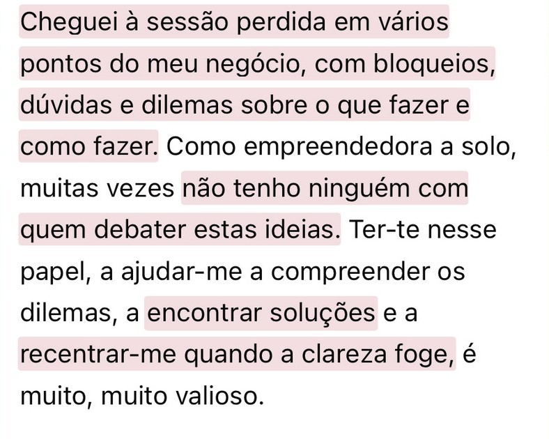

01
Direction
You have a specific question and need to pause, look at what is happening and see what the next step could be.
An approach to looking at your business and at the person building it,
and finding decisions that make sense for your reality.
At CEEN, we don’t assume there is something wrong with you, or that there is an ideal version you must live up to, or a formula for success you have to follow.
The starting point is your reality: where you are right now, the business you’ve built, and what you want to understand, change or move forward.
Discover what could make sense for you ↓
You don’t have to fit into a formula. The format depends on the
question you want to work on and where your business is right now.
You have a specific question and need to pause, look at what is happening and see what the next step could be.
You feel too deep inside the problem and want to connect dots that, for now, seem scattered.
Something in your business no longer fits your reality, and you want to review together what you want to realign.
A business’s decisions don’t happen in isolation. Your strategy, the way you work, what you value and the ideas that guide your choices all influence one another.
At CEEN, we explore these connections to better understand what is happening and identify concrete possibilities. Not to decide for you, but to help you decide with more clarity.
Sometimes a question about an offer or a business decision brings other questions with it: what you value, what you’re afraid to change and what no longer matches your reality.
The work is to make those pieces visible so you can weigh your options with more perspective and make decisions aligned with you.

At CEEN, we look at the business with the person at the center. From there, choices like these can emerge:
Each person arrives at a different design: CEEN doesn’t give you the formula: it helps you recognize which one is yours.
You can start with a specific question or choose a longer-term working space.
You don’t need to do a Session before the Cycle.
A space to look closely at a situation, organize what is at stake and identify possible actions that suit your context and your stage of life.
Explore the Session →A process with more room to explore the business, recognize patterns, review options and follow
how your decisions evolve over the course of the work.
It can start with a conversation about what you’re going through in your business
and what you’d like to see more clearly.